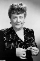

Country:United States, 91 minutes
Spoken languages:
Genres:Drama
Director(s):James V. Kern
Writer(s):Robert Smith, Mort Briskin
Video Codec:Unknown
Number: 1751


Certification:NR
Storyline:
In flashback from a 'Rebecca'-style beginning: Ellen Foster, visiting her aunt on the California coast, meets neighbor Jeff Cohalan and his ultramodern clifftop house. Ellen is strongly attracted to Jeff, who's being plagued by unexplainable accidents, major and minor. Bad luck, persecution...or paranoia? Warned that Jeff could be dangerous, Ellen fears that he's in danger, as the menacing atmosphere darkens.
Cast: 


Medium: Original DVD,
Comments: Part of: Mystery Classics - 50 Movie Pack
Loaned: No
Aspect ratio: Unknown